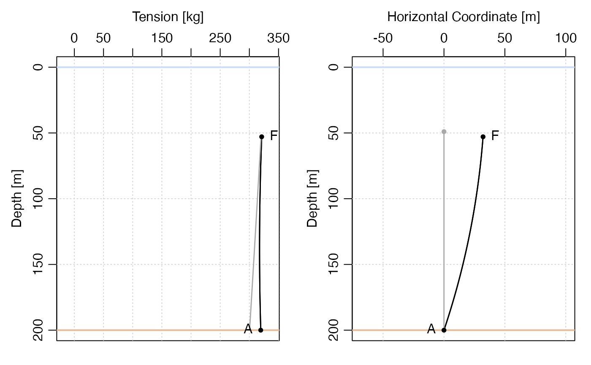
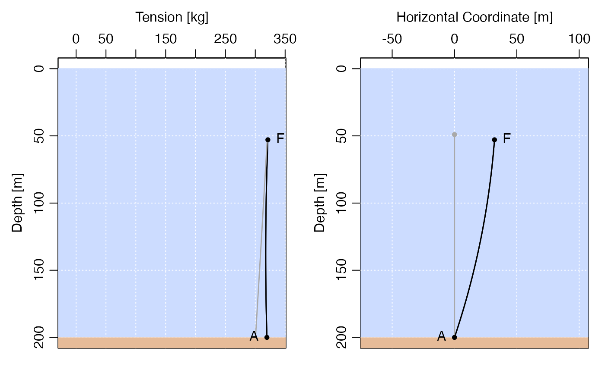

vignettes/mooring.Rmd
mooring.RmdThe mooring package deals with oceanographic moorings and their deformation by horizontal currents. The theory for that deformation is laid out in the vignetted entitled Mooring Response to Unidirectional Flow, while the present vignette deals with using the package.
Moorings are constructed with mooring(), the arguments of which, called ’elementalobjects, are created byanchor(),chain(),float(),instrument(),release(), orwire()`. These are specified from bottom to top. For example, consider a mooring in water of depth 200m, with a 150-m long wire connecting a bottom anchor to a float. This could be created with
where each of the function calls that construct the arguments has taken on a default value. To learn the possible values for any of these, supply a first argument as the string "?", e.g. the possible wire types (which include non-metallic wires) is:
wire("?")## [1] "1/2 Dyneema"
## [2] "1/2in AmSteel-Blue"
## [3] "1/2in Dacron"
## [4] "1/2in Kevlar"
## [5] "1/2in Neutral Wire"
## [6] "1/2in VLS"
## [7] "1/2in wire/jack"
## [8] "1/4-1/2 WarpSpd"
## [9] "1/4in AmSteel-Blue"
## [10] "1/4in galvanized wire coated to 5/16in"
## [11] "1/4in Kevlar"
## [12] "1/4in wire rope"
## [13] "1/4in wire/jack"
## [14] "11mm Perlon"
## [15] "1in Neutral Wire"
## [16] "1in Nylon"
## [17] "3/16in galvanized wire coated to 1/4in"
## [18] "3/16in wire rope"
## [19] "3/4in Dacron"
## [20] "3/4in Nylon"
## [21] "3/4in Polyprop"
## [22] "3/8in AmSteel-Blue"
## [23] "3/8in Kevlar"
## [24] "3/8in wire rope"
## [25] "3/8in wire/jack"
## [26] "5/16in Kevlar"
## [27] "5/16in wire rope"
## [28] "5/16in wire/jack"
## [29] "5/8in AmSteel-Blue"
## [30] "5/8in Kevlar"
## [31] "5/8in Nylon"
## [32] "7/16in Dacron"
## [33] "7/16in Kevlar"
## [34] "7/16in VLS"
## [35] "9/16in Dacron"
## [36] "9/16in Kevlar"
## [37] "BPS Cable"
## [38] "BPS Power/Coms"More details on the functions are provided with e.g. ?wire. Details of the objects are provided in the vignette called Default Values for Mooring Elements. Each element has information that the package can use to find forces that control mooring shape. The horizontal drag force at a given water speed depends on the object’s frontal area and drag coefficient. The vertical buoyancy force depends on the buoyancy of the element, which is expressed (in kg) mass equivalents (assuming \(g=9.8\)m/s\(^2\) for the acceleration of gravity) for discrete elements such as floats and instruments, and in buoyancy per length (in kg/m) for wires.
Note that new types of wire, float, etc. can be created easily, by supplying a name that is not matched in the list of built-in values. The help pages for the various functions explain what must be specified.
Actual moorings are likely to have multiple instruments, along with multiple buoyancy elements, but the mooring just created is sufficient to continue the discussion here.
The knockdown() function is used to compute the shape of a mooring that is deformed by a horizontal current. It takes just two arguments: the mooring, and the velocity. The latter may be a fixed value (in m/s), or a function that gives velocity as a function of depth below the water surface.
But, before applying knockdown(), it is important to first subdivide any wire elements into smaller lengths, so that knockdown() can compute the shape more precisely. This is done with the discretise() function. The following shows how to do this with the mooring just created.
md <- discretise(m) # breaks wire portions into approx. 1-m segmentsand the knocked-down mooring is found with e.g.
mdk <- knockdown(md, u=1)for a 1 m/s current.
The functions x() and z() find the \(x\) and \(z\) locations of mooring elements. Note that \(z=0\) at the surface and negative in the water column; use depth() to get depth below the surface.
For example, the shape of the knocked-over mooring from the previous code block could be plotted with
Similarly, the tension between elements is found with tension(), and the angle that elements make to the vertical is found with angle().
The plot shown above is quite primitive, so the package offers a plot() function. For example, this gives a view of tension and shape.

In both instances, the gray line is the shape that would occur with no current. Note that the shape plot uses a 1:1 aspect ratio, making it easier to understand the result. Also, note that depth is plotted here, as opposed to the \(z\) shown above.
A fancier version is obtained with

The package supplies app() as a convenient way to learn about the package. By design, it does not offer a way to make complex moorings. For example, it only provides an anchor-wire-float mooring, with no way (yet) to add a bottom release, instruments, floats, etc.
The following is a screenshot of the case studied so far, but with a weaker surface mooring (a 20-inch diameter Hydro-float Mooring Buoy1). The knockdown is much higher than seen in the plots above, because the float buoyancy is less than for that of the default float. (As a guide, the menus of app display the buoyancies of wire and float elements.)
Snapshot of the app() GUI application.
If the first argument to an element-forming function such as float(), instrument(), wire(), instrument(), etc., is not in the list of built-in types, then a new object is created. In this situation, all of the other arguments to the function must be supplied, and it should be born in mind that those arguments vary from type to type. For example,
i <- instrument("myNewInstrument", buoyancy=-5, height=1, area=0.1, CD=1)creates a new instrument object for something that has buoyancy -5kg (meaning it weighs 5kg in seawater), height 1m, area 0.1, and drag coefficient 1.
Strumming of wires in currents can increase wire drag coefficient \(C_D\) by perhaps a factor of 2 (Hamilton, Fowler, and Belliveau 1997; Hamilton 1989), and simple way to account for that might be to use
w <- wire(length=100) # default wire type
w2 <- w
w2$CD <- 2 * w2$CDAs a check, we may confirm that this doubles the drag for, say, a 1m/s current:
## [1] 534.04 1068.08Hamilton, James M., George A. Fowler, and Donald J. Belliveau. 1997. “Mooring Vibration as a Source of Current Meter Error and Its Correction.” Journal of Atmospheric and Oceanic Technology 14 (3): 644–55. https://doi.org/10.1175/1520-0426(1997)014<0644:MVAASO>2.0.CO;2.
Hamilton, J. M. 1989. “The Validation and Practical Applications of a Sub-Surface Mooring Model.” 119. Bedford Institute of Oceanography. https://waves-vagues.dfo-mpo.gc.ca/Library/112322.pdf.